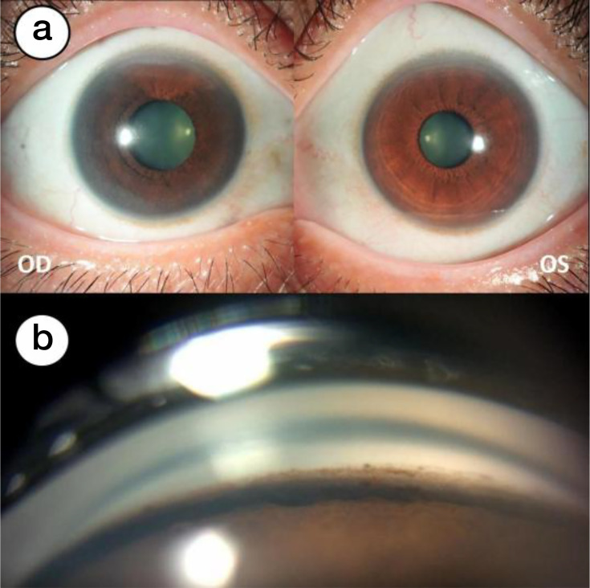
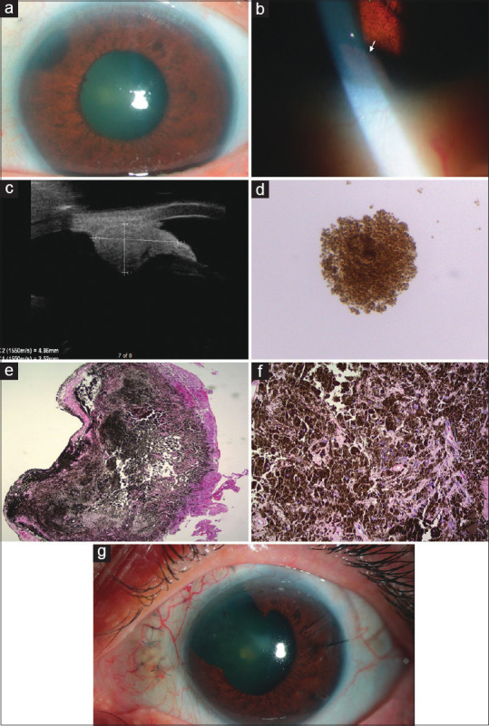
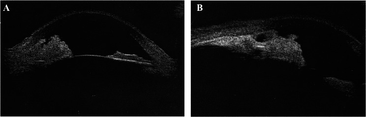

3245 — Glôcôm trên nền melanocytosis mắt (melanomalytic glaucoma): "một mắt – góc đầy sắc tố – nhãn áp không theo mức sắc tố" / Melanomalytic glaucoma in ocular melanocytosis
Tags: pattern:sac-to-goc-tien-phong pattern:goc-mo-mot-ben pattern:glaucoma-mot-ben pattern:khong-co-khoi vung:mat vung:goc-tien-phong vung:mong-mat vung:the-mi protocol:soi-goc protocol:UBM-35-50MHz protocol:AS-OCT protocol:sieu-am-B-scan protocol:EDI-OCT incidentaloma:khong
Mức chắc chắn (certainty): tổng hợp y văn (literature synthesis) — dựng từ đoàn hệ 194 bệnh nhân melanocytosis mắt–da (Ophthalmology 1990, PMID 2342801), đoàn hệ 163 bệnh nhân Nevus of Ota có soi góc (BMJ Open Ophthalmol 2025, PMC12083371), tổng quan hình ảnh melanocytosis 2023 (PMC9837000), các ca melanomalytic glaucoma có ảnh (PMC11981570, PMC12082992) và các mô tả mô bệnh học kinh điển (PMID 5492453, PMID 623184, PMID 3801367). Nhóm không có bệnh nhân của mình; chỗ chưa đủ chắc ghi "chưa rõ". Không ghi tên tác giả — attribution dùng tạp chí + năm + PMCID/PMID, đối chiếu Europe PMC ngày 2026-11-20.
Vị trí trong thư viện: 3235 phủ melanocytosis hắc mạc – nguy cơ melanoma; 3231 phủ tổn thương sắc tố mống mắt; 3237 phủ góc đóng trên nền PXF; 3238 phủ sắc tố + máu tiền phòng sau ICL. Bài này trả lời một câu duy nhất: khi một mắt có nhãn áp cao và góc tiền phòng đầy sắc tố, làm sao phân biệt "sắc tố lành" của melanocytosis với một khối u đang rỉ sắc tố vào góc — và khi nào được phép đặt stent/giảm áp mà không cắt u trước?
Câu chốt: (1) Glôcôm xuất hiện ở 10,3% bệnh nhân melanocytosis mắt–da (20/194, cộng dồn trong theo dõi — PMID 2342801) và ở ~10% trong các tổng quan (PMC9837000); (2) cơ chế chính là melanomalytic: đại thực bào nuốt melanin rồi bít lưới bè, làm giảm mạnh khả năng thoát dịch — đo được trên mắt cắt rời (PMID 623184), không phải "sắc tố nhuộm góc" đơn thuần; (3) mức sắc tố ở góc KHÔNG tương quan với nhãn áp (PMID 2342801) — nên "góc rất đen mà nhãn áp bình thường" và "góc hơi sắc tố mà nhãn áp 54 mmHg" đều có; (4) bẫy chết người là ring melanoma mống mắt: sắc tố 360°, UBM không thấy khối, đã điều trị "glôcôm" trung bình 30 tháng trước khi chẩn đoán (PMC7983622) — nên mọi glôcôm một bên có sắc tố góc phải được coi là u cho tới khi loại trừ.
1. Tổng quan bệnh học – cơ chế hình ảnh (TẠI SAO)
1.1 Hai bệnh cảnh dưới một cái tên
- Melanocytosis mắt (ocular melanocytosis) là u mô thừa tế bào hắc tố bẩm sinh ở mống mắt, thể mi, hắc mạc và củng mạc/củng mạc ngoài; khi kèm mảng sắc tố da vùng V1–V2 cùng bên thì gọi là melanocytosis mắt–da (oculodermal melanocytosis – ODM, Nevus of Ota) (3235). Sắc tố một bên ở 87% ca (213 ca, PMC11834911).
- Melanomalytic glaucoma là glôcôm góc mở thứ phát do melanin + đại thực bào bít lưới bè. Tên do mô tả lần đầu năm 1970 ở một mắt có u hắc mạc hoại tử (PMID 5492453), sau đó được xác nhận bằng đo khả năng thoát dịch và kính hiển vi điện tử (PMID 623184, PMID 3801367).
- Vì vậy "glôcôm do melanocytosis" không phải một bệnh mà là một cơ chế, có 4 đường vào: (a) melanomalytic — sắc tố + đại thực bào; (b) tắc nghẽn do khối — u mống mắt/thể mi xâm lấn góc; (c) góc đóng — thể mi to ra do sắc tố, hoặc thuốc gây tràn dịch thể mi–hắc mạc; (d) viêm — 5/194 bệnh nhân có tăng nhãn áp cấp kèm viêm màng bồ đào trước (PMID 2342801).
1.2 Vì sao melanin làm tắc dòng chảy — cơ chế "melanomalytic"
- Bình thường, thủy dịch thoát qua lưới bè (khe giữa các bè xơ – tế bào nội mô bè) rồi vào ống Schlemm. Bè là bộ lọc cỡ tế bào: hạt tự do nhỏ đi qua được, tế bào thì không.
- Melanin (melanosome) bị đại thực bào nuốt. Đại thực bào no melanin (melanomacrophage) to ra, bám vào mặt bè và nằm trong khoang gian bè; một phần tế bào nội mô bè cũng tự thực bào melanin rồi bong ra (PMID 623184). Kết quả là tắc cơ học — tác giả gọi thẳng là "quá trình cơ học đơn thuần" (PMID 3801367).
- Hệ quả định lượng: trên mắt melanomalytic, khả năng thoát dịch (facility of outflow) giảm rõ rệt cả in vivo và in vitro (PMID 623184). Đây là lý do nhãn áp tăng không tương xứng với "vẻ ngoài" của góc, và vì sao thuốc hạ nhãn áp thường chỉ kiểm soát được một phần.
- Nguồn melanin có thể từ: (a) mống mắt melanocytosis rỉ sắc tố mạn tính; (b) u hoại tử — melanoma thể mi/xơ nhiều tế bào hoại tử + phản ứng đại thực bào ồ ạt (PMID 3801367); (c) sau xạ — mảng xạ (plaque brachytherapy) làm u hoại tử, giải phóng melanin (PMID 26592671); (d) melanocytoma hoại tử rỉ sắc tố từng đợt (PMC11981570).
- Chi tiết nguy hiểm: trong u thể mi, tế bào u còn được tìm thấy trên mặt mống mắt và trong lưới bè, cách xa u nguyên phát (PMID 3801367). Nghĩa là "chỉ có sắc tố, không thấy khối ở góc" không đồng nghĩa "không có tế bào u ở góc" — đây là cơ sở mô học cho quy tắc phải loại trừ u trước khi can thiệp góc.
1.3 Vì sao MỘT BÊN — và vì sao so sánh hai mắt là bước rẻ nhất
- Melanocytosis là bất thường bẩm sinh một bên (87% — PMC11834911) → sắc tố góc, sắc tố củng mạc, heterochromia và mammillation mống mắt đều một bên. Tổng quan 2023 nêu rõ: glôcôm do iris melanocytosis thường MỘT bên, còn glôcôm sắc tố do hội chứng phân tán sắc tố (PDS) thường HAI bên (PMC9837000).
- Vì sao đáy mắt và góc bên bệnh tối hơn: melanin hấp thụ ánh sáng mọi bước sóng → vùng có nhiều melanin phản xạ ít hơn, soi góc thấy dải bè sẫm màu; đây là màu của sắc tố, không phải "phù" hay "viêm".
- Bất đối xứng là chốt lâm sàng: cùng một máy, cùng cường độ đèn, soi góc hai mắt cạnh nhau; chênh lệch mức sắc tố 1 bậc đã có ý nghĩa. Ở PDS, hai mắt thường cùng mức; ở melanocytosis, mắt bên bệnh luôn đậm hơn.
1.4 Vì sao mức sắc tố KHÔNG dự đoán nhãn áp — bài học từ 194 bệnh nhân
- Trong 194 bệnh nhân ODM: tăng nhãn áp ở mắt cùng bên 15 ca lúc khám đầu + 5 ca trong theo dõi = 10,3%; chia ra 3 glôcôm bẩm sinh/muộn, 14 tăng nhãn áp hoặc glôcôm góc mở, 3 glôcôm góc đóng cấp (PMID 2342801).
- Sắc tố góc lan rộng ở TẤT CẢ bệnh nhân (trừ nhóm góc đóng cấp), nhưng không có tương quan nhất quán giữa mức độ/lan rộng của sắc tố và việc tăng nhãn áp (PMID 2342801). Nói cách khác: góc đen ≠ glôcôm, và góc chỉ hơi sắc tố vẫn có thể glôcôm nặng.
- 19 bệnh nhân khác có C/D lớn hơn ở mắt bên bệnh dù nhãn áp bình thường — gợi ý giảm tế bào hạch/tổn thương đĩa thị bẩm sinh đi kèm, nên phải chụp OCT RNFL và đo thị trường chứ không chỉ đo nhãn áp (PMID 2342801).
- Vì sao tỉ lệ khác nhau giữa các nghiên cứu: đoàn hệ Thái Lan 1990 là bệnh nhân chuyên khoa mắt, theo dõi nhiều năm, cộng dồn → 10,3%; đoàn hệ Nevus of Ota Thái Lan 2025 khám 163 người, tuổi trung bình 15,0 ± 15,6, chỉ 2 mắt (1,1%) glôcôm góc mở, 6 mắt (3,3%) tăng nhãn áp, 16 mắt (8,7%) nghi glôcôm (PMC12083371). Hai số không mâu thuẫn: một bên là tỉ lệ suốt đời ở người được theo dõi, một bên là tỉ lệ tại một thời điểm ở quần thể trẻ.
1.5 Bảng số phải nhớ
| Chỉ số | Giá trị | Nguồn |
|---|---|---|
| Tăng nhãn áp/glôcôm ở ODM (194 bệnh nhân, cộng dồn) | 10,3% (20 ca): 3 bẩm sinh, 14 OHT/góc mở, 3 góc đóng cấp | PMID 2342801 |
| Tương quan mức sắc tố góc ↔ nhãn áp | KHÔNG nhất quán | PMID 2342801 |
| Tăng nhãn áp cấp + viêm màng bồ đào trước (góc mở) | 5/194 | PMID 2342801 |
| C/D lớn hơn ở mắt bệnh dù nhãn áp bình thường | 19 ca | PMID 2342801 |
| Nevus of Ota 2025 (163 người/184 mắt, tuổi TB 15,0) | glôcôm góc mở 1,1%; OHT 3,3%; nghi glôcôm 8,7% | PMC12083371 |
| Melanocytosis mắt: một bên | 87% (213 ca) | PMC11834911 |
| Nguy cơ melanoma hắc mạc suốt đời ở ODM | 1/400 (2,6 × 10⁻³); 90% chẩn đoán ở 31–80 tuổi | PMID 9442799 |
| Melanomalytic glaucoma (ca có ảnh) | nhãn áp 54 mmHg dù thuốc; tổn thương 5 × 3 × 2 mm trên UBM | PMC11981570 |
| Iris melanoma (29 mắt) | đường kính lớn nhất TB 6,1 mm (1,8–11,0); 34% ở chân mống mắt; 17% có glôcôm thứ phát | PMC8725464 |
| Ring melanoma mống mắt | chậm chẩn đoán TB 30 tháng (24 ca); > 50% đã được điều trị "glôcôm" trước đó | PMC7983622 |
| UBM | 36–100 MHz, phân giải trục tới 20 µm, bên tới 50 µm, xuyên 4–5 mm; B-scan thường 8–12 MHz | PMC9318338 |
2. Mẫu hình + chẩn đoán phân biệt theo vị trí (gamut)
Mẫu hình trung tâm: một mắt có nhãn áp cao (thường > 21 mmHg, có ca 40–54 mmHg) + soi góc thấy sắc tố dày ở dải bè, góc MỞ (không dính), không có khối rõ hoặc có khối nhỏ ở chân mống mắt/thể mi.
Gamut theo vị trí và cơ chế:
| Vị trí chính | Nhóm nguyên nhân | Điểm phân biệt then chốt |
|---|---|---|
| Mống mắt + góc | Melanocytosis mống mắt (melanomalytic) · PDS/glôcôm sắc tố · melanoma mống mắt/ring melanoma · melanocytoma mống mắt hoại tử | một bên + sắc tố củng mạc/mammillation = melanocytosis; khối/thickening = u |
| Thể mi | U thể mi (melanoma, melanocytoma) · nang thể mi · thể mi to do melanocytosis | UBM 35–50 MHz là xương sống; nang trống âm, u đặc |
| Tiền phòng | Viêm màng bồ đào trước + tăng nhãn áp · UGH (mống mắt cọ IOL) · máu tiền phòng cũ (hemosiderin) | tế bào viêm + dính đồng tử; tiền sử IOL/chấn thương |
| Góc đóng | Góc đóng cấp do melanocytosis thể mi to · góc đóng do thuốc (topiramate) · góc đóng nguyên phát | hai bên + cận thị cấp + tràn dịch hắc mạc = do thuốc |
| Hậu đoạn | Melanoma hắc mạc hoại tử rỉ sắc tố vào dịch kính rồi ra tiền phòng | sắc tố trong dịch kính + không thấy u trước = phải siêu âm hậu đoạn |
- Ảnh minh hoạ mẫu hình: sắc tố mống mắt + soi góc dày sắc tố (
images/3245_glaucoma-melanocytosis_SlitLamp-Gonio_PMC12083371.jpg); u mống mắt rỉ sắc tố + UBM (images/3245_glaucoma-melanocytosis_SlitLamp-UBM-Cytology_PMC11981570.jpg); UBM khối thể mi chèn góc (images/3245_glaucoma-melanocytosis_UBM_PMC12082992.jpg).
3. Bảng so sánh phân biệt (ma trận đối chiếu)
| Thực thể (entity) | Hình ảnh điển hình (soi góc / UBM / AS-OCT / siêu âm) | Chốt vào (rule-in) | Chốt loại (rule-out) | Gợi ý xác nhận |
|---|---|---|---|---|
| Glôcôm melanomalytic trên melanocytosis | Sắc tố dày dải bè một bên, Sampaolesi line, góc mở, không khối; sắc tố củng mạc + mammillation mống mắt cùng bên | Một bên + sắc tố củng mạc/mammillation + heterochromia; nhãn áp cao không tương xứng với mức sắc tố | Bilateral + khuyết xuyên sáng mống mắt giữa ngoại vi + tuổi trẻ cận thị → PDS, không phải melanocytosis | Soi góc hai mắt cạnh nhau; UBM 35–50 MHz loại khối; theo dõi nhãn áp nhiều lần |
| PDS / glôcôm sắc tố | Sắc tố góc 360°, Krukenberg spindle trên nội mô giác mạc, khuyết xuyên sáng mống mắt giữa ngoại vi, góc mở sâu | HAI bên, khuyết xuyên sáng điển hình, myope trẻ | Sắc tố củng mạc + mammillation + một bên → melanocytosis | Soi góc + đèn khe hai mắt; tiền sử gia đình |
| Melanoma mống mắt / ring melanoma | Sắc tố 360° lan trên mặt mống mắt và cả chân, mống mắt dày không đều; UBM có thể chỉ thấy dày, không có khối khu trú | Sắc tố góc dày toàn chu vi + mống mắt dày/ectropion uveae + nhãn áp khó kiểm soát kéo dài | UBM bình thường KHÔNG loại trừ ring melanoma; chỉ mô bệnh mới loại trừ | UBM + AS-OCT toàn chu vi; chụp ảnh màu; FNAB/cắt u khi nghi; theo dõi bằng ảnh chuẩn hoá |
| Melanocytoma mống mắt/thể mi | Khối sẫm màu rất đậm, bờ rõ, 5 × 3 × 2 mm trong ca có ảnh; rỉ sắc tố từng đợt; có thể hoại tử | Khối đặc + rỉ sắc tố + nhãn áp tăng từng đợt | Không có khối trên UBM → không phải melanocytoma thể tích lớn | UBM đo 3 chiều; tế bào học dịch tiền phòng/FNAB; cắt u nếu tiếp tục rỉ sắc tố |
| Melanoma thể mi xâm lấn góc | Khối thể mi đặc, phá vỡ cấu trúc thể mi, đẩy rễ mống mắt; góc có thể dính (PAS) | Khối thể mi trên UBM + góc dính một vùng + nhãn áp cao | Chỉ sắc tố, không khối, thể mi bình thường → không phải u thể mi | UBM 35–50 MHz + B-scan + MRI hốc mắt khi u lớn |
| UGH / sắc tố sau IOL (mống mắt cọ IOL) | Sắc tố + máu tiền phòng tái diễn, IOL trong rãnh/lệch, UBM thấy tiếp xúc mống mắt–IOL | Tiền sử IOL + hyphema tái diễn + tiếp xúc trên UBM | Không có IOL/vật liệu nội nhãn → loại | UBM; xem 3238, 3225 |
| PXF một bên | Sắc tố + chất bẩn (dandruff) trên bao trước thể thủy tinh và bờ đồng tử, góc hẹp/đóng, đồng tử giãn kém | Chất bẩn bao trước + bờ đồng tử khi giãn | Sắc tố lan tỏa không có chất bẩn → không phải PXF | Soi sau giãn; xem 3237 |
| Viêm màng bồ đào trước + tăng nhãn áp | Tế bào + flare tiền phòng, dính đồng tử, KPs; nhãn áp tăng cấp | Tế bào viêm + KPs + đau/đỏ | Không tế bào, không KPs → loại | Đèn khe; đáp ứng với corticoid |
| Sắc tố sau chấn thương / hemosiderin | Sắc tố góc một vùng, có thể Vossius ring, tiền sử đụng dập; góc có thể rẽ | Tiền sử chấn thương + sắc tố khu trú/vòng | Lan tỏa 360° một bên + mammillation → melanocytosis | Soi góc + UBM; xem 1962 |
Ảnh minh hoạ ma trận:



4. Protocol chụp + hệ phân độ/điểm chuẩn hóa
4.1 Bộ ba khám bắt buộc
- Soi góc (gonioscopy) có ấn — hai mắt, ghi: mức sắc tố bè 0–4, Sampaolesi line (sắc tố trước đường Schwalbe), dính góc (PAS), khối ở chân mống mắt, góc mở/đóng. Đây là bước quyết định và phải ghi bằng ảnh để so sánh giữa các lần.
- UBM 35–50 MHz — đo độ dày mống mắt, thể mi, và nếu có khối thì đo 3 chiều. UBM 36–100 MHz, phân giải trục tới 20 µm, bên tới 50 µm, xuyên 4–5 mm — sâu hơn AS-OCT nên thấy được thể mi sau mống mắt (PMC9318338). Đây là lý do UBM phải làm TRƯỚC khi đặt stent góc.
- AS-OCT đoạn trước — định lượng góc: góc mở (AOD), diện tích góc (TISA), độ dày mống mắt; bước sóng 830–870 nm hoặc 1310 nm, phân giải cao nhưng xuyên kém hơn UBM (PMC9318338).
4.2 Bổ sung theo bệnh cảnh
- Hậu đoạn: B-scan 8–12 MHz khi không thấy đáy mắt (sắc tố dịch kính, đục thể thủy tinh); EDI-OCT đo độ dày hắc mạc và so hai mắt nếu nghi melanocytosis hắc mạc (3235).
- Đĩa thị: OCT RNFL + thị trường — vì C/D lớn hơn có thể có sẵn ở mắt melanocytosis dù nhãn áp bình thường (PMID 2342801), nên chỉ nhãn áp là không đủ.
- MRI hốc mắt (T1 fat-sat + tiêm tương phản) khi u thể mi lớn/xâm lấn ra ngoài củng mạc hoặc cần phân biệt melanoma – melanocytoma; ngưỡng kích thước chính xác để chuyển MRI: chưa rõ (khác nhau giữa trung tâm).
- Đo nhãn áp nhiều thời điểm (đường cong ngày) vì trong melanocytosis có ca tăng nhãn áp cấp kèm viêm (5/194) và ca tăng theo đợt khi u rỉ sắc tố (PMC11981570).
4.3 Phân độ/điểm chuẩn hoá
- Không có RADS hay thang điểm riêng cho glôcôm melanocytosis; không có thang điểm nào được xác nhận để dự đoán nhãn áp từ mức sắc tố góc — đây là khoảng trống (mục 7).
- Dùng khung chung: glôcôm = tổn thương đĩa thị/thị trường đi kèm nhãn áp; tăng nhãn áp (OHT) = nhãn áp > 21 mmHg, đĩa thị bình thường. Mục tiêu hạ nhãn áp 20–30% so với ban đầu là quy ước thực hành, không có ngưỡng riêng cho melanocytosis.
- Nếu có u: phân giai đoạn theo AJCC 8th cho u hắc mạc (mống mắt/thể mi), nhưng ngưỡng kích thước trong bài này không nêu vì chưa đối chiếu toàn văn bảng AJCC.
4.4 Đường đi quyết định
flowchart TD
A[Glôcôm MOT BEN + sắc tố dày ở góc] --> B[Soi góc 360 hai mắt + UBM 35-50 MHz]
B --> C{Có khối mống mắt hoặc thể mi}
C -->|Có| D[Ung thư mắt: đo 3 chiều + B-scan + MRI khi lớn + FNAB hoặc cắt u]
C -->|Không| E{Có dấu melanocytosis: sắc tố củng mạc + mammillation + heterochromia}
E -->|Có| F[Glôcôm do melanocytosis]
E -->|Không| G[Xét PDS, PXF, UGH, chấn thương, viêm]
F --> H[Thuốc hạ nhãn áp + corticoid nếu có viêm]
H --> I{Kiểm soát nhãn áp}
I -->|Có| J[Theo dõi 3-6 tháng: nhãn áp, đĩa thị, thị trường]
I -->|Không| K[SLT rồi trabeculectomy hoặc MIGS hoặc van dẫn lưu]
D --> L[Kiểm soát nhãn áp song song với điều trị u]
Lưu ý Mermaid: sơ đồ chỉ là khung tư duy; quyết định cuối thuộc bác sĩ điều trị.
5. Biến thể bình thường và cạm bẫy
5.1 Biến thể bình thường dễ gọi nhầm
- Mammillation mống mắt (các gờ nhỏ như "vú") và heterochromia ở melanocytosis là bẩm sinh, lành tính; không phải u. Chúng chỉ có ý nghĩa định vị mắt bệnh để so sánh.
- Sắc tố góc lan tỏa nhưng nhãn áp bình thường là biến thể thường gặp (sắc tố góc lan rộng ở gần như tất cả bệnh nhân ODM — PMID 2342801). Không đặt stent/không mổ chỉ vì "góc đen".
- Sampaolesi line có thể thấy ở người lành mạnh lớn tuổi hoặc PDS; một mình nó không chẩn đoán melanocytosis.
5.2 Cạm bẫy chết người
- "Mật độ sắc tố = mức glôcôm" — SAI. 194 bệnh nhân cho thấy không tương quan (PMID 2342801). Hệ quả: bỏ theo dõi người "góc hơi sắc tố", và mổ oan người "góc rất đen nhưng nhãn áp tốt".
- Ring melanoma không có khối trên UBM — ca 85 tuổi được điều trị "glôcôm tân mạch" 2 năm trước khi cắt nhãn cầu; UBM chỉ thấy mống mắt dày không đều, không có khối khu trú; mô bệnh là ring melanoma thể hỗn hợp, GEP class 2 (PMC7983622). Tổng quan 24 ca: chậm chẩn đoán trung bình 30 tháng, > 50% đã được điều trị glôcôm trước đó.
- Giãn đồng tử làm bùng sắc tố — mydriasis có thể gây phân tán sắc tố vào thủy dịch và mất bù glôcôm góc mở mạn (PMID 7236569). Ở mắt melanocytosis, giãn đồng tử để khám đáy mắt phải kèm đo nhãn áp sau đó.
- Tăng nhãn áp sau mảng xạ không phải "tái phát" — melanomalytic glaucoma được mô tả sau brachytherapy do u hoại tử xạ (PMID 26592671). Đừng vội xạ lại/mổ lại; hãy tìm melanin + đại thực bào và điều trị nhãn áp.
- Sắc tố trong dịch kính + tiền phòng mà không thấy u trước — ca melanoma hắc mạc hoại tử rỉ sắc tố toàn nhãn cầu; 2 lần cắt dịch kính chẩn đoán trước đó không tìm ra u (PMID 3050685). Vì vậy: luôn siêu âm hậu đoạn ở "glôcôm một mắt + sắc tố dịch kính".
- Tế bào u có thể nằm trong lưới bè xa u nguyên phát (PMID 3801367) → đặt stent/MIGS khi chưa loại trừ u là gieo tế bào vào đường thoát (suy luận cơ học, không có thử nghiệm).
- Góc đóng cấp trong melanocytosis vẫn xảy ra (3/194) — thể mi to do sắc tố/thuốc gây tràn dịch thể mi–hắc mạc; LPI không giải quyết thể do thuốc.
- Nhãn áp kiểm soát sau cắt u ≠ hết bệnh: sau iridocyclectomy, ca có ảnh vẫn cần thuốc hạ nhãn áp tối đa và van dẫn lưu vì tổn thương bè đã hình thành (PMC11981570).
6. Tự lượng giá — Blind Quiz (bấm mở đáp án)
Ca 1 — nam 44 tuổi, nhìn mờ mắt phải 3 tháng, nhãn áp 52 mmHg
- Gợi ý lâm sàng: mắt phải có mảng sắc tố xanh xám quanh mắt từ nhỏ; mắt trái bình thường; không đau, không đỏ.
- Câu hỏi: (1) Mô tả 2 dấu hiệu chính trên ảnh. (2) Nêu 3 chẩn đoán phân biệt cho "góc đầy sắc tố một bên". (3) Dấu hiệu nào chốt nguyên nhân nền?
Bấm để hiện đáp án (findings + chẩn đoán)
- Dấu hiệu: (a) mống mắt sẫm màu hơn với mammillation và mất cấu trúc hốc mống mắt; (b) soi góc: sắc tố dày ở dải bè, góc mở, không khối, có Sampaolesi line.
- Chẩn đoán: melanocytosis mắt (Nevus of Ota) với glôcôm melanomalytic — melanin + đại thực bào bít lưới bè, giảm khả năng thoát dịch (PMID 623184; PMID 2342801).
- Chốt: sắc tố củng mạc/mammillation cùng bên + một bên + không khối trên UBM; phân biệt PDS (hai bên, khuyết xuyên sáng) và ring melanoma (mống mắt dày toàn chu vi, cần loại trừ dù UBM "không khối").
- Nguồn ảnh: BMJ Open Ophthalmol 2025, PMCID PMC12083371, CC BY-NC 4.0.
Ca 2 — nữ 54 tuổi, mắt trái đau, nhãn áp 54 mmHg dù 3 thuốc
- Gợi ý lâm sàng: tổn thương sẫm màu nhỏ ở mống mắt góc trên–mũi, rỉ sắc tố lấm tấm ra mặt trước mống mắt; thị lực 20/100; giác mạc phù nhẹ.
- Câu hỏi: (1) Tổn thương nằm ở đâu và kích thước? (2) Vì sao nhãn áp tăng từng đợt? (3) Xử trí: thuốc, cắt u hay đặt van?
Bấm để hiện đáp án (findings + chẩn đoán)
- Dấu hiệu: khối sẫm màu mống mắt–thể mi, 5 × 3 × 2 mm trên UBM, rỉ sắc tố ra mặt trước mống mắt và dày sắc tố toàn chu vi dải bè với góc mở.
- Chẩn đoán: melanocytoma mống mắt hoại tử gây melanomalytic glaucoma — tế bào học: tế bào đa giác chứa đầy hạt sắc tố che nhân.
- Xử trí: thuốc hạ nhãn áp tối đa + cắt u (iridocyclectomy); sau mổ nhãn áp 13 mmHg vẫn cần thuốc tối đa, cuối cùng van dẫn lưu — vì tổn thương bè do melanin đã cố định.
- Nguồn ảnh: Taiwan J Ophthalmol 2025, PMCID PMC11981570, CC BY-NC-SA 4.0.
Ca 3 — nữ 44 tuổi, nhãn áp không kiểm soát, "chỉ thấy sắc tố ở góc"
- Gợi ý lâm sàng: mắt trái có tổn thương sẫm màu ở rễ mống mắt, soi góc thấy góc bị chèn, nhãn áp cao; FNAB lần đầu không kết luận.
- Câu hỏi: (1) UBM cho thấy gì? (2) Vì sao FNAB có thể âm? (3) Bước tiếp theo?
Bấm để hiện đáp án (findings + chẩn đoán)
- Dấu hiệu: UBM: khối không phẳng, bờ không đều ở mống mắt, chèn vào góc tiền phòng; thể mi kế cận dày và tăng phản xạ → u xâm lấn thể mi.
- Chẩn đoán: melanocytoma mống mắt–thể mi (mô bệnh xác nhận) gây glôcôm thứ phát; FNAB âm vì tế bào chứa đầy sắc tố che nhân và mẫu ít.
- Bước tiếp theo: cắt u tại chỗ (iridocyclectomy) ± phaco thay vì chỉ điều trị nhãn áp; nhãn áp về bình thường trong 8 tháng, không tái phát ở 2 năm.
- Nguồn ảnh: Diagn Pathol 2025, PMCID PMC12082992, CC BY-NC-ND 4.0 (nguyên bản, không phái sinh).
7. Câu hỏi nghiên cứu & điểm chưa đồng thuận (tính đến 11/2026)
[Tranh cãi] Ở bệnh nhân glôcôm do melanocytosis mắt, SLT có phải là điều trị đầu tay thay cho thuốc hạ nhãn áp không?
- Đã biết: tổng quan 2023 dẫn một loạt 13 mắt ODM được SLT bằng Nd:YAG Q-switched, ghi nhận hiệu quả và an toàn (PMC9837000); nhưng đây là loạt nhỏ, không có nhóm chứng.
- Chưa rõ: tỉ lệ thành công 1 năm/2 năm, số mũi cần lặp, và nguy cơ viêm/bùng sắc tố ở góc rất đậm (melanin hấp thụ mạnh bước sóng 532 nm).
- Hướng nghiên cứu: RCT hoặc đoàn hệ tiến cứu SLT vs thuốc, phân tầng theo mức sắc tố góc.
- Nguồn: PMC9837000; PMID 12362088.
[Khoảng trống] Có thang điểm nào dự đoán nhãn áp từ mức sắc tố góc ở melanocytosis không?
- Đã biết: 194 bệnh nhân cho thấy không tương quan giữa mức/lan rộng sắc tố và tăng nhãn áp (PMID 2342801); đoàn hệ 2025 chỉ có 1,1% glôcôm góc mở ở tuổi trung bình 15 (PMC12083371).
- Chưa rõ: yếu tố nào thực sự dự báo glôcôm (độ dày thể mi? mật độ đại thực bào? gen GNAQ/GNA11?), và tần suất theo dõi tối ưu theo tuổi.
- Hướng nghiên cứu: đoàn hệ tiến cứu có UBM/AS-OCT định lượng + nhãn áp đường cong, phân tích sống còn.
- Nguồn: PMID 2342801; PMC12083371.
[Khác biệt thực hành] Sau khi cắt u mống mắt–thể mi, khi nào đặt van/MIGS thay vì tiếp tục thuốc?
- Đã biết: một ca vẫn cần thuốc tối đa và van dẫn lưu dù u đã cắt (PMC11981570); ca khác kiểm soát được nhãn áp sau iridocyclectomy + phaco và không tái phát 2 năm (PMC12082992).
- Chưa rõ: ngưỡng nhãn áp/thời gian để chuyển phẫu thuật glôcôm, và liệu đặt stent góc ở mắt đã có tế bào u trong lưới bè có làm tăng gieo tế bào.
- Hướng nghiên cứu: registry đa trung tâm về phẫu thuật glôcôm sau cắt u hắc mạc, có phân tích tái phát/di căn.
- Nguồn: PMC11981570; PMC12082992.
Bài liên quan chéo
- 3235 – Melanocytosis mắt – hắc mạc & Nevus of Ota: nền sắc tố che melanoma
- 3231 – U mống mắt (melanoma, nevus, nang)
- 3237 – PXF + góc đóng: LPI hay lấy thể thủy tinh
- 3238 – UGH sau ICL (sắc tố + máu tiền phòng)
- 1962 – Rách thể mi chấn thương & góc rẽ
- 448 – U hắc mạc
Ảnh
images/3245_glaucoma-melanocytosis_SlitLamp-Gonio_PMC12083371.jpg— BMJ Open Ophthalmol 2025, PMC12083371, CC BY-NC 4.0.images/3245_glaucoma-melanocytosis_SlitLamp-UBM-Cytology_PMC11981570.jpg— Taiwan J Ophthalmol 2025, PMC11981570, CC BY-NC-SA 4.0.images/3245_glaucoma-melanocytosis_UBM_PMC12082992.jpg— Diagn Pathol 2025, PMC12082992, CC BY-NC-ND 4.0 (nguyên bản, không ghép/cắt).- Chi tiết nguồn, hình gốc, giấy phép và phái sinh:
images/CREDITS.md.
Không dùng để chẩn đoán độc lập khi chưa có người hướng dẫn.